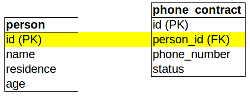

Now we can start to use our new skills to solve a criminal case: one of the most startling art thefts in history: On October the 23rd, 2014 the Mona Lisa was stolen from the Louvre in Paris. There is no trace of the thieves. You are working for Interpol and want to find out who is responsible for this crime. Due to new regulations you have access to any data of many international companies and states, like registers of residents, mobile phone text messages, and bank data. So, using these resources, find the thieves!
So, first you need to get an overview of what kind of data is actually available, i.e. you want to know what tables are in the database. The sqlite database contains are table named sqlite_master which holds meta information. We can get the names of the tables by an ordinary SQL query:
select name from sqlite_master where type = 'table';
To get information about a specific table use the pragma command:
pragma table_info (tablename);
12.) Use the two commands above to get information about the columns in the various tables. Remarks: In other databases (e.g. Oracle, DB2 etc.) this meta information is stored differently, i.e. the system tables are always called differently. Sometimes there is more than one system table. When working with another database than sqlite you need to google for the names of the system tables of that database.
When you follow the tutorial you will step-by-step:
When you try to transform the following questions into SQL queries, you might want to check for the actual column names again using the pragma command!
13.) Look at the system table. What table could contain information regarding traveling?
14.) Get an idea what kind of information is stored in the travel-table? Hint: have a look at the actual data, and a second look on the table information
15.) Get the name of all persons who live in Paris.
16.) Get all names that did a journey to Paris before 23.10.2014.
17.) Get all names that did a journey from Paris after 23.10.2014.
18.) Get all names, that did a journey to Paris before 23.10.2014, where this name is also in an entry for a journey from Paris after the 23.10.2014.
19.) Get all names of persons who live in Paris or spent their time in Paris on 23.10.2014 (according to the travel data).
Congratulations! You have reduced the number reduced the number of suspects tremendously!
The local police will pay these people a visit to ask for an alibi for the time in question. So you need a list of names and their residence. Repeat the select from before, but this time query for name as well as for residence.
Now, check the result. There is something wrong! In the list of conspicuous persons, there is one, who actually never was in Paris, i.e. who lives neither in Paris nor was traveling there.
20.) Who is it? Hint: First, perform a select on the flight table where the name is one of those who do not live in Paris. Second, check for every person-residence pair if there is a corresponding flight. For one there is no corresponding flight. Who is this person? Why is this person turning up in that list?
Now, look at your where statement in the last query you have performed. The tables person and flight are joined by the field name whose entries are not unique. To prevent mistakes like this, data is usually more structured: People who create a table, usually define a column (or the combination of several columns) which is unique for every entry. This column is called the primary key (PK). Other tables which are referencing entries of this table have a corresponding column, containing the same value as the primary key column of the referenced table. This corresponding column is called foreign key (FK). For example, in our person table the field id is the primary key. This id is used in the phone_contract table as a foreign key person_id.

To find out about the primary keys of a table we can use the pragma command as
pragma table_info (tablename);
This returns a list of columns where the last number is non-zero exactly if the column is a primary key. However, to also see foreign keys you have to use the column sql in the table sqlite_master.
21.) What foreign keys are used in the table containing the messages and which is the referenced table?
Since the primary key is unique, it is also unique which entry is referenced. Often, primary key columns contain the suffix "id" (=identifier) and foreign key columns contain the name of the referenced table, like names_id. However, this is only a convention which might not be fulfilled for all databases you ever encounter.
22.) Try the query from the last section again, but this time use as the connection column not the name, but the foreign key-column.
Because of this, but also for other reasons not discussed here: If you query data spreading over more than one table, and if there exists a connection between a primary key and a foreign key, always use this connection! Do not use other columns, which seem to serve the same purpose!
To find out who is the thief, check the text messages stored by the mobile phone providers.
23.) What are the names of the table containing the text messages and the one containing phone contracts?
24.) Get all text messages which where sent between 2010-10-20 and 2010-10-25.
25.) Get all contract ids where the contract.name_id is equal to one of the persons from the results of question 19.
26.) Get all text messages where the sent date between 2010-10-20 and 2010-10-25 and the contract_sender_id is equal to the contract ids where the contract.name_id is equal to one of the persons from the results of question 19.
You see that you got all the required information but the output looks kind of chaotic. You can order an result set according to a column with an order by phrase. The query to get all text messages from 21.10.2014 ordered by time reads
select message from messages where sent like '2014-10-21%' order by sent;
Remember again that date comparison is in SQLite a lexicographical comparison. So, if we would use sent = '2014-10-21' we got an empty result set. Instead we must use the % wild-card for the time information as shown above.
27.) Get a list of messages from our suspects from the given time period and sort the messages.
28.) Who are the thieves? Hint: Read the conversations as they a give a clear trace. Check the ids of sender and receiver of the message and look it up in the person tables!
If you have found the thieves you deserve some break! After that, you can continue the investigation of this incredible crime and find out who was the string puller.